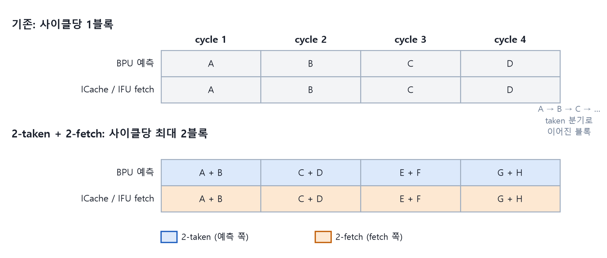

1장 · 블록 하나로는 왜 부족한가
frontend가 사이클마다 명령어를 몇 개 공급하는지는 fetch block의 크기가 정한다. 그런데 fetch block의 크기는 frontend가 정하지 않는다. 프로그램의 분기가 정한다.
이 장에서 배우는 것
- fetch block의 시작과 끝이 어떻게 정해지는지 설명할 수 있다.
- 사이클당 명령어 공급량의 상한과 하한을 계산할 수 있다.
- 2-taken과 2-fetch가 상한은 그대로 두고 하한만 올리는 이유를 말할 수 있다.
fetch block은 어디서 끝나는가
fetch block은 2바이트 단위의 임의 주소에서 시작한다. 끝은 두 가지 중 먼저 오는 쪽이다. 첫 taken 분기가 있으면 거기서 끝난다. 없으면 시작 주소에 64바이트를 더한 뒤 32바이트 단위로 내림한 주소에서 끝난다.
그래서 블록 하나에 들어가는 명령어 수는 넓게 흔들린다.
| 경우 | 블록 크기 | C 확장 없음 (4바이트 명령어) | C 확장 있음 (2바이트 명령어 섞임) |
|---|---|---|---|
| 첫 명령어가 taken 분기 | 2 또는 4바이트 | 1개 | 1개 |
| taken 분기 없음, 시작 주소가 32바이트 정렬 | 64바이트 | 16개 | 최대 32개 |
| taken 분기 없음, 시작 주소가 정렬되지 않음 | 34~62바이트 | 9~15개 | 최대 31개 |
그림 읽는 법. 표의 첫 행이 문제다. 분기가 촘촘한 코드는 이 행에 가깝게 산다. 블록 하나에 명령어 하나가 들어가고, backend는 그 사이클에 하나만 받는다.
실험 1 · 공급량을 손으로 세기
설명용 모델. taken 분기가 평균 L개 명령어마다 하나씩 나오고, 명령어 크기는 평균 s바이트라고 가정한다. ICache miss와 redirect는 없다고 본다.
사이클당 공급량은 블록 수와 블록당 명령어 수의 곱이다.
| 2-taken, 2-fetch 이전 | 2-taken, 2-fetch 이후 | |
|---|---|---|
| 사이클당 블록 수 | 1 | 최대 2 |
| 사이클당 최소 명령어 수 (분기가 연속일 때) | 1 | 2 |
| 사이클당 최대 명령어 수 | 16 (C 확장 시 32) | 16 (C 확장 시 32) |
| decode로 넘어가는 수 | 사이클당 최대 8 | 사이클당 최대 8 |
상한이 그대로인 이유는 IFU가 한 사이클에 다루는 명령어 열이 64바이트, 곧 32 슬롯으로 고정되어 있기 때문이다. 두 블록은 크기 합이 64바이트 이하일 때만 2-fetch로 묶인다.
해 볼 것. L을 4로 놓고 사이클당 명령어 수를 계산해 보자. 이전에는 4개, 이후에는 최대 8개다. 이제 L을 20으로 놓자. 이전에도 블록 하나가 decode 폭 8을 채운다. 2-fetch는 묶이지도 않는다. 효과는 분기가 촘촘할 때만 나타난다.
두 기능은 왜 짝이어야 하는가
2-taken은 예측 쪽 대역폭을 늘린다. BPU가 한 사이클에 taken 분기 2개를 예측해 FTQ 엔트리 2개를 만든다. 2-fetch는 fetch 쪽 대역폭을 늘린다. ICache와 IFU가 한 사이클에 fetch block 2개를 처리한다.
예측만 빨라지면 FTQ에 엔트리가 쌓이기만 한다. fetch만 빨라지면 FTQ가 금방 비어 버린다. 큐의 양쪽 끝이 같은 속도로 움직여야 한다.

그림 1-1. 기존 구조와 2-taken + 2-fetch의 블록 공급량 비교. 블록이 짧은 구간에서만 차이가 난다.
핵심 정리
- fetch block은 첫 taken 분기에서 끝난다. 블록의 크기를 정하는 것은 frontend가 아니라 프로그램이다.
- 사이클당 공급량의 상한은 64바이트로 그대로다. 2-taken과 2-fetch는 하한을 1블록에서 2블록으로 올린다.
- 효과는 블록당 명령어가 1~4개인 구간에서 나타난다. 긴 블록은 원래 혼자서도 decode 폭을 채운다.
- 예측과 fetch 중 한쪽만 빨라지면 FTQ가 넘치거나 마른다. 둘은 짝이다.
확인 퀴즈
- 시작 주소가 32바이트 정렬이 아니고 taken 분기가 없는 블록의 크기 범위는?
- 두 블록의 크기 합이 80바이트다. 2-fetch로 묶이는가?
- backend 폭이 8인데 사이클당 최대 공급이 16이다. 상한을 늘리지 않은 선택이 합리적인 이유는?
답
- 34~62바이트. 시작 주소 + 64바이트를 32바이트 단위로 내림하므로 정렬 오프셋만큼 줄어든다.
- 묶이지 않는다. IFU의 명령어 열이 64바이트이므로 합이 64바이트 이하일 때만 2-fetch가 된다.
- 긴 블록은 혼자서도 8을 채운다. 굶는 구간은 짧은 블록이 연속되는 곳이고, 그곳은 하한이 결정한다.